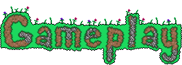
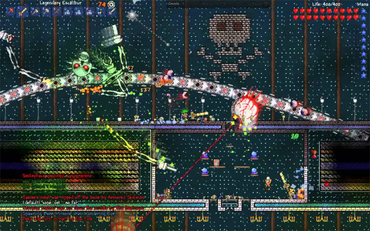
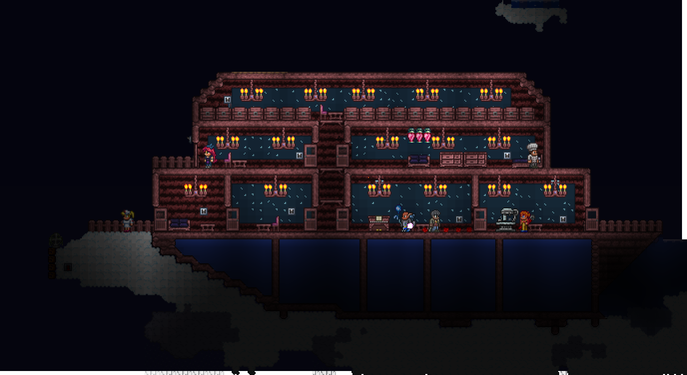

Terraria - revenge of the cult of the moon thing
Or, a tale of how I learned that you cannot trust rabbits.
Yada yada, footage is taken from the Desktop version, and not all of it is mine. Don’t sue me.
Terraria. Now, before you go dismissing it like some Minecraft clone, hold your trigger fingers. This isn’t Castle Miner Z, it holds many many differences. For starters…

Terraria plays from a 2D side-on perspective that you quickly realise is the only thing the game doesn’t try to hide. Anyway, actual gameplay is easy, use the WASD keys to move, mouse to move the cursor, and left click to do a thing with your equipped item. It's easy to pick up and tutorials are available. Your goal is simple - slay every boss… Soon you’ll realise its not as simple as that.

But before that, you have to deal with…
You need tools, my friend. The idea is that you build up from your starting gear into the strongest available.
NPC’s. These are the lifeblood of your little home, allowing you to quickly heal, take quests, or research the uses of materials. You can also buy guns/ammo, throw a party, or get really, really drunk. All friendlies in the area also reduce monster spawning nearby, to the point of 3 or 4 NPC’s completely negating spawns. Most of the time.
A Town. Well, those NPC’s need a home, and a base of operations is good. It can be things other than a town - for instance, Here is my Boat base stuck in the clouds:

The random events. As you increase in power, random events can start happening - from Invasions and boss attacks to blood moons (which negate the NPC anti-spawn) and solar eclipses.
Terraria does have a clear set of progression - Defeat the 3 main bosses of the world - The Eye of Cthulhu, Skeletron, and The Wall of flesh/ Brain of Cthulhu[1] before targeting the big bad of hell, the Wall of Flesh. Then you realise that the real experience begins as defeating the bacon coloured baron of hell has unleashed…. A land of rainbows. Yeah. oh and much tougher enemies, and a whole new heap of bosses. So now you have 3 robot versions of the first three, then some bulb in the Jungle that if you don’t kill fast will make progress impossible, THEN kill the Golem of said jungle, to THEN fight a cult…. And that's just to start the endgame bullet hell. Did we say this game likes its projectiles? It loves it projectiles.
I mean, what is even going on here?

Honestly? This is the best part. The need to keep track of a lot of things brings Terraria more on par with an MMO rather than a sandbox. I never thought I’d have to manage a budget in a 2D game that people mistook as “for kids” but will give you nightmares about that one time a brain emerged from a wall with a loud bang that would make you think someone kicked the door down… unless someone did kick the door down-in which case… Actually no, I won’t ask.
But of course, remember that:
Difficulty slider? No, difficulty options… and there's 3 different settings.
- Player difficulty - “Softcore” means you drop your money on death, “Mediumcore” drops all items on death, and with “Hardcore”... Death is permanent. At least if you do die you become a ghost. Spoopy.
- World Difficulty - Great, this is two different things.
- Base difficulty - “Normal” plays the system as intended. “Expert” makes every enemy tougher and bosses scale on player count.
- The World state difficulty - The world starts in Pre-mode, where there is little threat. After defeating the wall of flesh, “Hardmode” commences which accelerates some things as well as ramping the difficulty up. Defeating the calamity within the jungle will slow the accelerated things back down (The pronoun game is strong)

 PQ:SOTL (Review)
PQ:SOTL (Review)